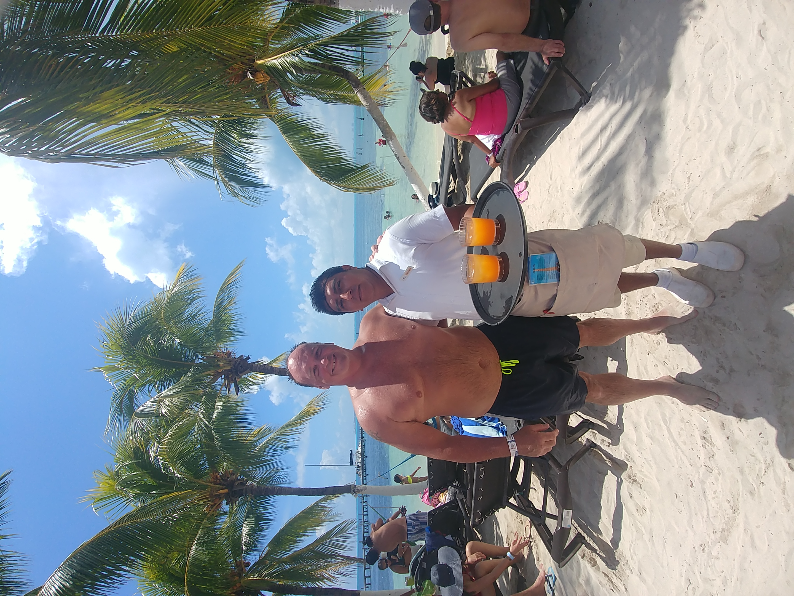

Dakota and Hank
This website is dedicated to Charles Hein, aka Chuck or Mr. Charles. I’ve known Chuck for 7 years and counting.
Chuck was born and raised in Omaha, NE. He spent his career at Nebraska Furniture Mart for 34 years and plan to retire there in a few years.
He has a daughter in college, a son in high school. He has two dogs, Dakota the Lab and Hank the Great Pyrenees. He allergic to cats so he has cat decorations instead.
He loves rock bands from the past and has several favorite artists that he considers to have pure talent. I can usually find him in the garage with speakers blasting a tune depending on his mood.
Hobbies
Man and his bikeWith buffalo
Chuck can be a speed devil, but he also tells me ‘Speed Kills.’
He loves riding his motorcycle. He took the kids for a summer vacation back in 2009 and ran into the Sturgis rally happening at the same time.
That started his long time affair with riding. He bought himself a 2011 Harley Davidson Fatboy with limited edition paint.
After that, going to Sturgis each summer is always on his list of vacations for the year. Needless to say, he took me to my first ever Sturgis rally in 2014. We love seeing the buffalo in the Black Hills.
Full Throttle Saloon is his favorite spot to hang out at. He also has a Chevy Silverado and occasionally refers himself as the Silverado Man.
This video gives a feel about his passion for riding.
Sports
Greenbay PackersAfter Cubs game at Wrigley Field
Chuck loves sports as well, some of his favorites are golf, football, baseball and basketball.
He’s taken me to my first baseball and football games. I must admit the hotdogs are what convinced me to go.
He likes going to the gym, working out is a past time of his. He used to play high school football but an injury put an end to it.
Cancun
At Chichen Itza

Made friends with the bartender at Isla Mujeres
About 2 years ago, he decided he wanted to take a trip to Cancun. The last time he went was in 1997. This was our first international trip together.
From that first trip, we’ve gone back to Cancun 2 more times. He loves snorkeling, crashing the waves and enjoying a cold beer by the pool. We made our first trip to one of the Seven
Wonders of the World, Chichen Itza. Also went to a nearby island, Isla Mujeres.
Cancun also introduced him to good quality Tequila. Too much alcohol and he becomes a happy rambling fool, no filter.
He just blurts out what comes to mind. I’ve had to tell him to either stop drinking or stop talking.
Food
Paradisus StyleMeal ready!
Like me, Chuck enjoys delicious foods. I do most of the cooking at home, but he is the grill master.
I must say that his burgers are the best. He insists on using fresh, never frozen 80% lean hamburger.
A self-professed cookie monster(cookies are his weakness), he also loves snacking on chips.
Corn chips, potato chips, veggie chips you name it. He rediscovered guacamole and salsa in Cancun and they became his favorite version of guac and salsa.
He is pretty adventurous about trying new foods although he would stop at fisheyes and the likes of it.
Contact
There is more to Chuck than time allows so I will stop here. I hope this brief site was able to give you an idea of how he enjoys life to the fullest.
Please email for any questions.